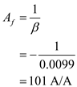

Step 1:
Refer to the circuit diagram of feedback current amplifier in Figure P10.26 in the textbook.
Write the formula for open-loop gain.
Here,
The differential resistance of the operational amplifier is 
The open loop gain is 
The output resistance is 
The source resistance,
The output resistance,
Substitute for  and for
and for  in the equation.
in the equation.
Step 2:
It is given that the open loop gain is large, that is,
Now determine the closed-loop gain formula.
Thus, the closed-loop gain  , if the loop-gain is large enough.
, if the loop-gain is large enough.
The condition under which is gain is obtained is .
Step 3:
Consider the following data.
Calculate the open-loop gain.
Thus, the open-loop gain of the current amplifier  is.
is.
Step 4:
Calculate feedback factor.
Thus, the feedback factor of the current amplifier  is.
is.
Step 5:
Now determine the closed-loop gain formula.

Thus, the closed-loop gain of the current amplifier  is.
is.